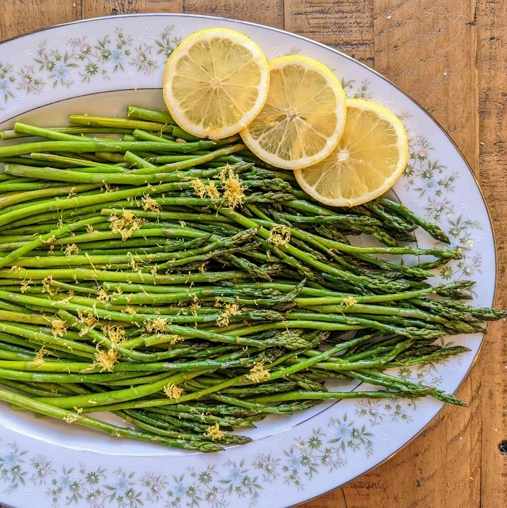

Oven-Roasted Asparagus

Ingredients
- 1 bunch thin asparagus spears, trimmed
- 3 Tablespoons of olive oil.
- 1 ½ tablespoons grated Parmesan cheese (Optional)
- 1 clove garlic, minced (Optional)
- 1 teaspoon sea salt
- ½ teaspoon ground black pepper
- 1 tablespoon lemon juice (Optional)
How to make: step-by-step
- Step 1: Preheat the oven to 425 degrees F (220 degrees C)
- Step 2: Place asparagus into a mixing bowl; drizzle with olive oil and toss to coat.
Sprinkle with Parmesan cheese, garlic, salt, and pepper. Arrange asparagus in a single layer in a baking
dish.
- Step 3: Bake in the preheated oven until just tender, 12 to 15 minutes depending on
thickness. Sprinkle with lemon juice just before serving.